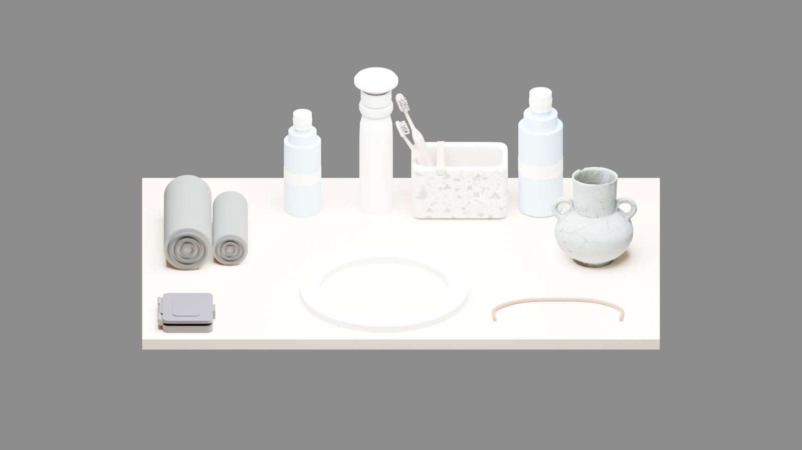
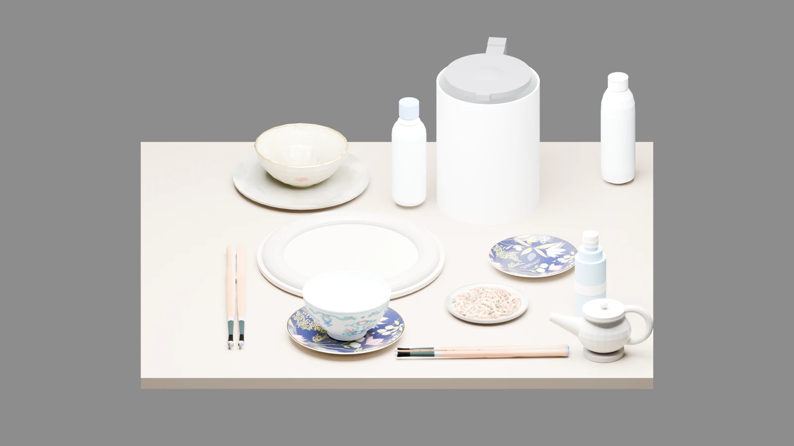
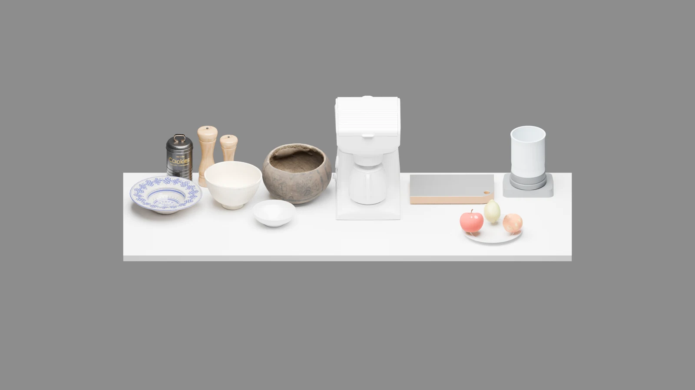
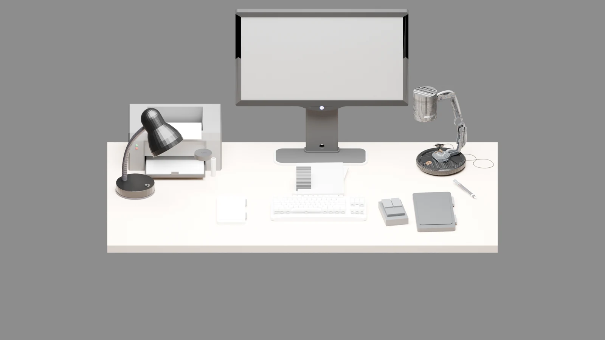
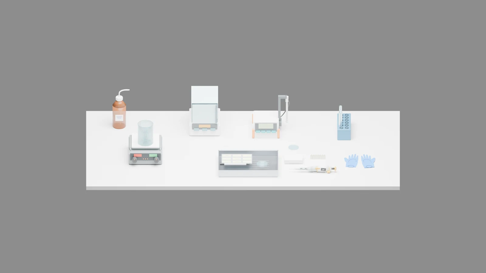
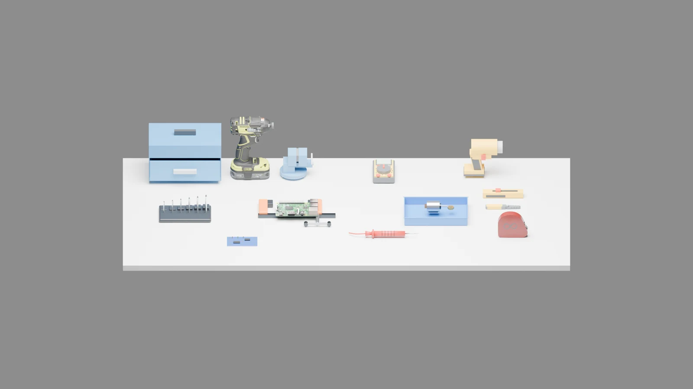
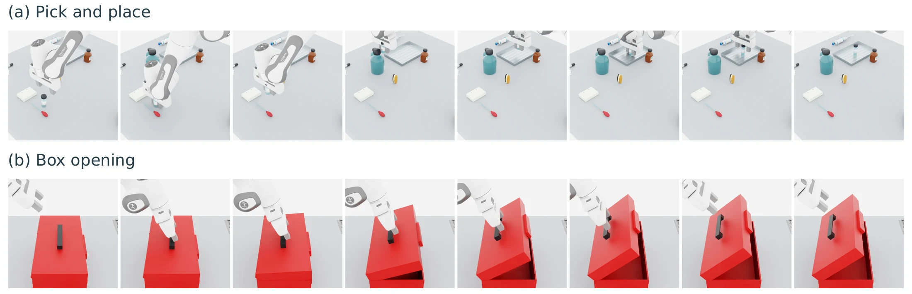

Understand the input
Confirm object identities, support surfaces, and spatial relations.
Interactive supplementary material
TACER turns images or text into interactive scenes through hierarchical asset and scene programs, with verification-guided repair.
01 / Explore the scenes
A desktop supports a monitor riser, a drawer unit, and a small shelf. These structures provide additional surfaces for everyday objects.
Switch to 3D to inspect the scene.These prepared, programmatic cases illustrate the multi-support extension. The viewer displays stored scenes; it does not run generation, physics, or robot evaluation.
02 / Scene gallery






Curated and locally repaired scene renders from the visualization collection. These examples show scene diversity, rather than an unedited sample of benchmark outputs.
03 / How TACER works
Confirm object identities, support surfaces, and spatial relations.
Select asset routes and prepare geometry, physical representations, and articulation.
Assemble hierarchical scene programs and use verification feedback to guide local repairs.
Check scene consistency, support, clearance, settling, and perturbation responses.

04 / TabletopAudit
An independent benchmark evaluates final scene submissions, from fidelity to the input through simulation and robot task execution.
333 cases build on MesaTask; 167 add laboratory, office, and workshop settings. Text and Image tracks share case identities, while each exposes only its respective input.
Object count, spatial relations, placement, and visible attributes.
CNT · REL · PLC · ATRCollision, support, workspace boundaries, access clearance, and image appearance.
COL · SUP · EDGE · CLR · image metricsScene loading, physics advancement, and target stability during settling.
LOAD · PHYS · STABGrasp or contact poses, reachability, planning, physical execution, and task completion.
GRASP / POSE · REACH · PLAN · PICK / MOVE · TASK20 Pick · 20 Place-into · 20 Place-onto
20 Open · 8 Press · 8 Slide/Pull · 4 Rotate
Fidelity and scene quality use the 500-case tracks; simulation and robot execution use Embodied-100. Evaluation distinguishes pass, fail, unknown, and inapplicable outcomes. Missing evidence is not counted as a pass.
05 / Quantitative results
Results reported in the manuscript under shared benchmark protocols. The prepared scenes in this demo are separate qualitative examples.
RigidManip-60 · TASK
71.67%TACER task success, compared with 20.00% for TabletopGen.+51.67 percentage pointsArticulation-40 · TASK
60.00%TACER task success, compared with 5.00% for TabletopGen + Articraft.+55.00 percentage pointsCumulative pass rates (%): each gate requires all preceding gates to pass. Higher is better. Bold marks the best reported value.
| Method | LOAD ↑ | PHYS ↑ | STAB ↑ | GRASP ↑ | REACH ↑ | PLAN ↑ | PICK ↑ | TASK ↑ |
|---|---|---|---|---|---|---|---|---|
| TabletopGen | 81.67 | 63.33 | 56.67 | 46.67 | 40.00 | 33.33 | 23.33 | 20.00 |
| TACER | 100.00 | 96.67 | 93.33 | 90.00 | 86.67 | 85.00 | 78.33 | 71.67 |
LOAD: loading; PHYS: physics advancement; STAB: target settling; GRASP: grasp generation; REACH: reachability; PLAN: motion planning; PICK: physical pick; TASK: task completion.
| Method | LOAD ↑ | PHYS ↑ | STAB ↑ | POSE ↑ | REACH ↑ | PLAN ↑ | MOVE ↑ | TASK ↑ |
|---|---|---|---|---|---|---|---|---|
| TabletopGen + Articraft | 87.50 | 67.50 | 32.50 | 25.00 | 20.00 | 10.00 | 5.00 | 5.00 |
| TACER | 100.00 | 95.00 | 85.00 | 77.50 | 72.50 | 70.00 | 62.50 | 60.00 |
POSE: contact/action pose generation; MOVE: executed joint motion. The articulated baseline augments TabletopGen with Articraft. Articulated TASK measures goal attainment during execution with contact and base-drift checks; sustained or terminal goal holding is not required.
Pass rates (%) for binary metrics. LPIPS is lower-is-better; DINOv2 and CLIP report feature cosine similarity, higher-is-better. Bold follows the manuscript.
| Method | CNT ↑ | REL ↑ | PLC ↑ | ATR ↑ | COL ↑ | SUP ↑ | EDGE ↑ | CLR ↑ |
|---|---|---|---|---|---|---|---|---|
| Holodeck-table | 18.43 | 7.20 | 17.98 | 19.76 | 97.20 | 94.87 | 98.71 | 58.40 |
| MesaTask | 23.83 | 9.80 | 21.95 | 22.86 | 9.40 | 83.99 | 97.49 | 10.00 |
| TabletopGen | 67.80 | 24.20 | 26.14 | 56.68 | 67.60 | 99.05 | 96.54 | 63.60 |
| TACER | 99.86 | 78.65 | 95.82 | 68.35 | 99.40 | 98.65 | 98.61 | 75.80 |
CNT: count; REL: spatial relation; PLC: placement; ATR: visible attributes; COL: collision avoidance; SUP: static support; EDGE: workspace boundary; CLR: access clearance.
| Method | CNT ↑ | REL ↑ | PLC ↑ | ATR ↑ | COL ↑ | SUP ↑ | LPIPS ↓ | DINOv2 ↑ | CLIP ↑ |
|---|---|---|---|---|---|---|---|---|---|
| MIDI | 49.29 | 20.55 | 12.05 | 28.68 | 44.80 | 19.29 | 0.4126 | 0.6542 | 0.8741 |
| SAM3D | 98.95 | 63.25 | 53.25 | 60.13 | 81.20 | 99.35 | 0.3594 | 0.6063 | 0.7684 |
| TabletopGen | 76.42 | 31.60 | 34.94 | 61.83 | 74.80 | 99.23 | 0.3896 | 0.6463 | 0.8982 |
| TACER | 99.67 | 82.36 | 97.88 | 84.62 | 98.80 | 99.55 | 0.2589 | 0.8466 | 0.9199 |
Pass rates retain applicable unknown outcomes in the denominator. Metrics aggregate over their own requirement, scene, or object units; appearance metrics average cases with valid fixed-front-view evidence.
06 / Interaction examples
